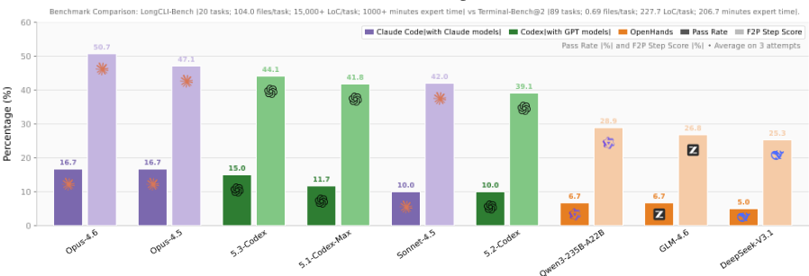
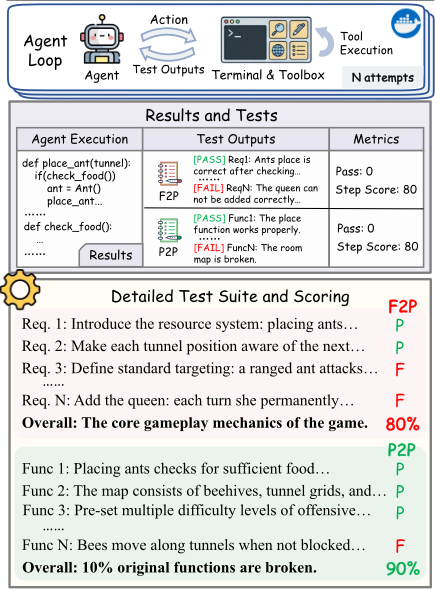
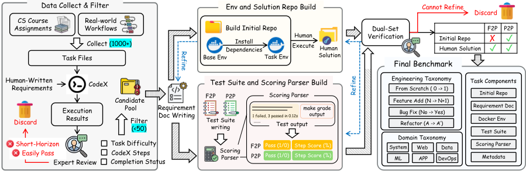
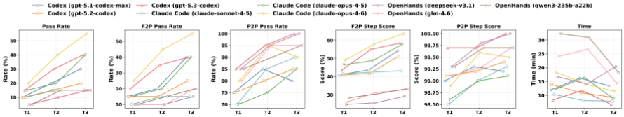

LongCLI-Bench：面向命令行界面中长时程 Agentic 编程的初步基准与研究
现有编程评测基准任务时程短、易受 GitHub 数据污染且只提供粗粒度反馈，难以评估 Agent 在真实软件工程中的长时程规划与执行能力。论文构建 LongCLI-Bench：从 958 个 CS 课程作业与 50 个真实工作流中人工筛选出 20 个长时程 CLI 任务，覆盖从零构建、功能新增、Bug 修复、重构四类工程类别，并提出 F2P（需求达成）+P2P（回归避免）双测试集协议与 step-level 评分。实验显示所有 SOTA Agent（Codex、Claude Code 等）pass rate 均低于 20%，多数任务在完成度 30% 之前即失败，失败主因是长时程工作流崩溃（重复循环、环境定位缺口、上下文漂移）而非局部编码错误。Self-correction 收益有限且后期可能引入回归，而注入计划与交互式人工指导显著提升性能（Claude Code 达 58.3%），表明人机协同工作流是当前更有效的提效路径。
现有 AI 编程评测基准存在三大缺陷：任务时程短（如 Terminal-Bench@2 平均仅 227.7 LoC）、从 GitHub 抓取导致数据污染、只提供二元 pass/fail 等粗粒度反馈，因而无法严格评估真实软件工程所需的长时程规划、长期上下文维护与多步骤相互依赖工作流的执行能力。论文要回答：当前最强 Agent 在长时程 CLI 工程任务上的真实水平如何、瓶颈在哪，以及 self-correction 与人在回路协作各能带来多大提升。
从 108 门课程的 958 个 CS 作业与 50 个真实研发工作流中，经 Codex 试做与人工评审筛选出 20 个高质量长时程任务，覆盖 From Scratch、Feature Addition、Bug Fix、Refactor 四类工程类别与六个技术领域。每个任务包含初始 repo、需求文档、Docker 隔离环境、人工 golden solution、测试套件与评分解析器；提出 F2P（fail→pass，验证新需求实现）+P2P（pass→pass，验证无回归）双测试集协议，并引入 step-level 评分定位长工作流断点；测试脚本仅依据需求文档编写以防把实现烤入测试，任务经迭代闭环验证与专家评审。评测对象包括商业 CLI 助手（Codex、Claude Code）与 OpenHands 框架上的开源模型（DeepSeek-V3.1、GLM-4.6、Qwen3-235B-A22B），统一 system prompt、每配置 3 次运行取平均；另设多轮 Self-Correction 与两类人机协作实验（静态 Plan Injection、动态 Interactive Guidance，人工只给路线图不给代码），并对 50 条失败轨迹做人工错误分析。
所有被测 Agent 系统 Pass Rate 均低于 20%，最高的 Claude-Opus-4.6 仅 16.7%，多数模型低于 15%
F2P step score 分布显示：所有 Agent 中占比最高的结果集中在 <30% 完成度区间，即大多数任务在早期阶段就失败
所有模型平均 P2P step score >98%，但 P2P pass rate 仅 70.0%–88.3%，即 12%–30% 的复杂修改引入了回归；OpenHands+DeepSeek-V3.1 取得最高 P2P pass rate 88.3%
任务规模：平均每任务 15,000+ LoC、104 个源文件、专家完成时间 1000+ 分钟（对比 Terminal-Bench@2 的 227.7 LoC、0.69 文件、206.7 分钟）
Self-Correction 多轮实验：T1→T2 提升明显、T2→T3 边际收益缩小；Codex+GPT-5.3-Codex 的 P2P pass rate 在 T2 达 95%、T3 达 100%，而 GPT-5.1-Codex-Max 从 T2 的 85% 降至 T3 的 80%，Claude-Opus-4.6 从 95% 降至 90%
人机协作：Claude Code 静态 Plan Injection 达 58.3% pass rate（Self-Correction 为 55.0%）且效率更高；Plan & Interactive 组合在所有指标上最佳，预注入计划使 Claude Code 平均人工干预次数从 2.4 降至 2.1，Interactive 设置下 F2P Score 从 65.4 升至 67.4
人工分析 50 条失败轨迹：失败主要由长时程工作流崩溃导致（弱策略适应导致的重复循环、环境定位与验证缺口、长期不一致与回归/上下文漂移），而非局部语法级编码错误
基准构建成本：每个任务平均需 40 小时人工（写需求文档、构建解法路径、搭建测试环境与脚本）
区别于 SWE-bench 系列（GitHub 抓取、易污染、短且单一类别的任务）与 Terminal-Bench（任务简单短时程、仅二元 pass/fail 反馈），LongCLI-Bench 的区别在于：(1) 任务源自 CS 作业与真实工作流并改写需求文档以控制数据污染；(2) 任务达平均 15,000+ LoC、专家耗时 1000+ 分钟的长时程真实规模；(3) 提出 F2P+P2P 双测试集协议，同时度量需求达成与回归避免；(4) 引入 step-level 评分，可区分早期失败与接近成功、定位执行链的具体断点；(5) 系统量化比较了 self-correction 与两类人机协作（Plan Injection / Interactive Guidance）的增益差异，得出人机协同优于纯自主修正的结论。
相关度级别：high
命中能力域：3.5 评测与可靠使用 | 3.3 Agent 架构与工具使用 | 3.1 上下文工程与记忆
理由：直接命中 3.5：这是一个面向 Agentic 编程的评测基准，包含人机协作工作流的实证研究（Plan Injection 与 Interactive Guidance 的量化对比），正是团队'评测保障'与'人机协作工作流'能力域的代表性工作。同时强命中 3.3：论文对单 Agent 执行可靠性做了系统分析——self-correction 的多轮收益与回归风险、失败轨迹归因（重复循环、环境验证缺口）对团队设计 Agent loop/harness、规划与反思机制有直接指导意义。次要命中 3.1：错误分析明确把'长运行中的上下文漂移（遗忘早期约束）'列为三大失败原因之一，且指出长时程任务需要'长期上下文一致性维护'，为团队的上下文组织与记忆策略提供了实证依据，但论文本身未提出上下文工程方法。对团队的价值在于：既可作为内部 Agent 工具评测的方法参考，其人机协作结论也直接支持'把模型用好'的流程设计。
建议动作：深入精读并做内部分享
arXiv:2602.14337v2 [cs.SE] 2026年2月26日
LongCLI-Bench：面向命令行界面中长时程智能体编程的初步基准测试（benchmark）与研究
Yukang Feng 1,2,3∗ Jianwen Sun 1,2,3∗ Zelai Yang 1∗ Jiaxin Ai 2,4 Chuanhao Li 4 Zizhen Li 1,2,3 Fanrui Zhang 2 Kang He 2 Rui Ma 5 Jifan Lin 5 Jie Sun 2 Yang Xiao 6 Sizhuo Zhou 2 Wenxiao Wu 2 Yiming Liu 2 Pengfei Liu 2,5 Yu Qiao 2,4 Shenglin Zhang 1 Kaipeng Zhang 2,3†
1 南开大学（NKU） 2 上海创智学院（SII） 3 盛大AI东京研究院（Shanda AI Research Tokyo） 4 上海人工智能实验室（Shanghai AI Laboratory） 5 上海交通大学（SJTU） 6 香港理工大学（PolyU）
项目主页：https://github.com/finyorko/longcli-bench

AI辅助编程的范式正在经历一场从代码生成到自主软件工程的根本性转变。诸如 SWE-agent (Yang et al., 2024a)、OpenHands (Wang et al., 2024) 以及商业 CLI 助手 (OpenAI, 2025; Anthropic, 2025; Google, 2025) 等现代智能体（Agent）如今已能像人类工程师一样工作：它们规划架构、浏览代码仓库、管理开发环境，并基于环境反馈通过命令行界面（Command Line Interfaces, CLI）执行多步骤工作流 (Yao et al., 2022; Shinn et al., 2023; Madaan et al., 2023)。
尽管取得了这些进展，评估基准测试（benchmark）却已相对滞后。早期的基准测试，如 HumanEval 和 MBPP (Chen et al., 2021;
1
# 引言：在本项目中，你将通过补全缺失的游戏机制和单位行为，创建一个蚂蚁保卫蚁后免受蜜蜂入侵的塔防模拟……

Austin et al., 2021)，仅评估孤立代码片段中的算法逻辑。而后续的基准测试（benchmark）如 SWE-bench (Jimenez et al., 2024; OpenAI, 2024) 虽然扩展到了仓库级别，但仍局限于时程较短的单一类别任务，并且受到从 GitHub 抓取的仓库所带来的数据污染的影响。最近的 TerminalBench (Institute, 2025) 引入了带有社区贡献任务的交互式沙盒环境，但其任务仍然简单、时程较短，且缺乏细粒度评估，无法提供有效反馈或诊断失败模式。
在真实场景中，软件工程任务本质上是具有持续性需求的长时程（long-h
智能体编程性能由大语言模型（LLM）与 Agent 脚手架共同塑造。首先，面向代码的 LLM (Rozière et al., 2023; Li et al., 2023; Seed et al., 2025; Huang et al., 2024)，例如 DeepSeek-Coder (Guo et al., 2024) 和 Qwen3Coder (Yang et al., 2025a)，已在代码理解与生成方面展现出相当可观的能力。其次，SWE-agent (Yang et al., 2024a) 能够通过接口与真实代码仓库进行交互，而 OpenHands (Wang et al., 2024) 则提供了一个端到端框架；其他系统则探索了不同的途径，包括结构化定位与修复 (Zhang et al., 2024)、多智能体优化 (Huang et al., 2023)、规划式编程 (Bairi et al., 2023)、基线方法 (Xia et al., 2024) 以及检索增强补全 (Zhang et al., 2023)。在实践中，商用命令行界面（CLI）助手 (OpenAI, 2025; Anthropic, 2025; Google, 2025)，例如 Codex，集成了包括通用工具调用与自我完善机制在内的创新范式 (Yao et al., 2022; Schick et al., 2023; Shinn et al., 2023; Madaan et al., 2023)，展现出了强大的智能辅助能力。
代码生成的评测已从简单的函数级任务逐步演变为日益复杂、基于环境的仓库级挑战。早期的基准测试（benchmark）衡量的是函数级（Chen et al., 2021; Austin et al., 2021; Hendrycks et al., 2021）与类级（Du et al., 2024）任务，这类任务有助于评估局部正确性，但在很大程度上忽视了跨文件规划。因此，基准测试扩展到了更加多样化的测试套件与领域（Lu et al., 2021; Lai et al., 2022; Cassano et al., 2022; Zhuo et al., 2024）、面向时效性的评测（Jain et al., 2024），以及需要显式跨文件推理的任务（Liu et al., 2023; Ding et al., 2023）。
在仓库层面，SWE-bench 系列（Jimenez et al., 2024; OpenAI, 2024; Zan et al., 2025; Yang et al., 2024b; Yu et al., 2025; Yang et al., 2025b）通过满足项目测试的补丁来评测真实的 GitHub issue 解决能力。与之互补的基准测试则扩展到特性与长程任务（Li et al., 2025; Ni et al., 2025; Deng et al., 2025）、仓库生成（Ding et al., 2025）以及测试生成（Mündler et al., 2024）。与此同时，以环境为中心的基准测试（Xiao et al., 2025; Fu et al., 2025; Chan et al., 2024）强调可复现的执行。但这些基准测试均挖掘自 GitHub，容易受到污染的影响（Xu et al., 2024; Deng et al., 2024）。Terminal-Bench（Institute, 2025）提供了一个包含社区贡献任务的标准化沙箱，用于评测 Agent 的编码与终端能力。然而，它仅限于短时任务，且只提供二元的通过/失败反馈，这阻碍了对 Agent 性能的细致分析。此外，恰恰因为这些任务缺乏真实世界工作流所固有的复杂性与连续性，现有基准测试正日益面临饱和问题。因此，我们提出了 LongCLI-Bench，这是一个由多类别、长程真实世界任务构成并支持步骤级评测的基准测试。
LongCLI-Bench 围绕五项原则设计：长程性、污染控制、明确需求、可解性以及隔离环境。
现有的大多数基准测试（benchmark）都是从热门 GitHub 仓库中抓取任务，但这会增加污染风险。我们避免直接挖掘，而是从两个主要来源精选任务：计算机科学（CS）课程作业和真实世界工作流。
3

CS 课程作业由领域专家严格设计，通常具有清晰的规格说明以及贴近真实的代码库。然而，要构建一个真正能够挑战现代 agent 的基准测试，需要进行大量的筛选。为确保任务的高质量以及与基准测试目标的一致性，我们开展了一项劳动密集型的人工筛选过程。具体而言，我们首先从涵盖操作系统、网络、数据处理等多个领域的 108 门课程中识别并收集了 958 份作业。对于每份作业，我们整理了任务文档，并使用 Codex 对其进行执行。由于大多数作业缺乏自动化评估指标，我们随后对 Codex 生成的解答进行了人工评估，以核实任务完成状态，这使我们能够评估每个任务的可行性与难度。通过全面的人工审查，我们发现 Codex 能够出色地完成大多数 CS 作业以及许多项目级任务。因此，我们剔除了那些过于简单或难以进行一致性评估的任务，仅保留了需要复杂、多步骤工程技能的一小部分任务。
这些是从实际研究与工作场景中衍生出的长链任务，其中所有信息均由人工构建。这些任务的灵感来源于日常开发活动，例如编写代码、配置环境以及构建数据处理流水线，它们代表了一系列复杂且连续的子任务，映射了真实的工作流程。至关重要的是，这些任务表现出强烈的顺序依赖性，构成了一个完整的需求链，其中前序步骤的结果决定了后续步骤的可行性。
根据具体的任务目标，我们精心编写了一份需求文档，明确定义了功能目标与入口点规范。该文档必须清晰地阐述需要实现的功能。这样可以避免假阴性（false negatives）情况的出现，即正确的逻辑由于任意且无法定位的入口点而未能通过测试。
对于附带现有描述的计算机科学（CS）课程作业，我们通过替换特定的变量/函数/文件名以及背景故事来部分重写需求，以防止简单的检索匹配，从而在降低数据污染风险的同时提升可读性。对于源自真实场景的任务，需求则完全由人工编写。
我们在 Docker 容器中并行构建执行环境与解答代码库。该过程从一个基础 docker 镜像出发，通过迭代方式求解任务，同时记录必要的依赖项。最终产出被严格分离：依赖项被固化到 Dockerfile 中，以提供一致的基础环境；而人工解答路径则构成解答仓库（solution repo），用于验证任务的可解性。
测试脚本仅依据需求文档编写，而非解答仓库。这可以防止将实现“固化”到测试中，并避免从人工解答中继承潜在错误。我们采用两组测试集：1) Fail → Pass (F2P)：这类测试用于评估需求的完成状态。2) Pass → Pass (P2P)：
这类测试在其他基准测试（benchmark）中往往被忽略，它们用于验证 Agent 的修改没有破坏系统的现有功能。
为了准确反映任务完成情况，我们优先采用环境状态验证，例如通过检查端口是否处于监听状态以及日志内容来确认服务是否已部署，而不是仅仅验证是否编写了启动命令。此外，两组测试集均会计入步骤级得分（step-level score）。对于内置评分脚本的计算机科学（CS）作业，我们解析其输出以计算该得分；对于没有预定义测试的任务，我们手动将需求切分为子任务，并编写相应的评估脚本。
验证条件。若 F2P 测试在初始仓库上失败而在解答仓库上通过，且 P2P 测试在两个仓库上均通过，则该任务有效。
为确保基准测试质量，我们采用严格的迭代式闭环验证流程：1) 在环境搭建与解答创建过程中，一旦发现任何歧义或缺失内容，我们立即修订文档。2) 测试套件验证。针对初始仓库和解答仓库执行测试脚本。若验证条件未得到满足，则表明测试脚本、解答或环境存在问题。人类专家会审查并修复该问题，从而触发重新验证。若某任务在三次迭代后仍无法满足验证条件，则将其舍弃。3) 专家评审。每项任务在纳入前均需经过最终的专家评审，以确保其逻辑正确性与可行性。
LongCLI-Bench 围绕五项原则设计：长时程（long-horizon）、隔离环境、明确需求、可解性与污染控制。每项任务由以下组件构成：
Initial Repo（初始仓库）：任务的起始代码库（例如骨架代码或空目录）。
Task Requirement（任务需求）：一份任务需求文档，明确定义功能目标与入口点，以确保需求清晰。
Environment（环境）：一个隔离环境，确保执行的一致性与可复现性。
Solution Repo（解答仓库）：由人工编写的“黄金解答”，确保任务可解且可验证。
Tests（测试）：一套双重测试套件，同时验证需求满足情况与回归测试。
Scoring Parser（评分解析器）：一个用于分析测试输出以计算步骤级指标的解析器。
Metadata（元数据）：包括任务类型、领域、难度级别以及估计的人工完成时间。
基于上述组件，评估遵循以下顺序：
LongCLI-Bench 还支持可选的评估方法：
为了系统地评估 Agent 在整个软件开发生命周期中的能力，我们将任务划分为四个不同的工程类别。这一分类使得能够在核心工程能力的全谱系上对 Agent 的性能进行有针对性的评估。
从零构建（0 → 1）：从零开始规划、配置并构建一个可运行项目的能力。
功能新增（N → N+1）：向现有代码库添加新模块的能力。
缺陷修复（No → Yes）：诊断、定位并修复复杂缺陷的能力。
重构（A → A′）：优化或重构代码的能力。
除工程类型之外，LongCLI-Bench 还涵盖六个主要领域，以评估 Agent 在不同技术领域中的能力。
系统编程（System Programming）：操作系统、编译器、内存、并发、嵌入式编程、硬件接口以及分布式系统。
Web 开发（Web Development）：前端/后端、数据库、API 设计、身份验证以及服务。
数据工程（Data Engineering）：爬取、过滤、格式化以及统计分析/可视化。
5
机器学习（Machine Learning）：训练、推理、部署、评估以及信号处理。
应用程序（Applications）：商业或游戏玩法、仿真引擎、物理集成以及交互式工具。
DevOps：CI/CD 流水线、容器化、环境构建、系统监控/诊断。
| Benchmark | Tasks | Files | LoC | Expert Time (min) |
|---|---|---|---|---|
| Terminal-Bench@2 | 89 | 0.69 | 227.7 | 206.7 |
| LongCLI-Bench | 20 | 104 | 15,000+ | 1000+ |
| Benchmark | Tasks | Files | LoC | Expert Time (min) |
我们对 LongCLI-Bench 中精心筛选的 20 个任务进行了详细的统计分析。
LongCLI-Bench 中每个任务平均包含 15,000+ 行代码（LoC）和 104 个源文件，涵盖了包括 C、Python、Java 和 JavaScript 在内的多样化语言生态，体现了复杂的、仓库级别的工程。与之形成鲜明对比的是，Terminal-Bench@2 平均仅有 227.7 LoC 和 0.69 个文件。这一差距凸显出，LongCLI-Bench 评估的是在庞大且相互依赖的系统内处理长时程复杂问题的能力，而非执行孤立的代码片段。
这种复杂性还延伸至时间维度，带来了显著更高的认知负荷。专家完成 LongCLI-Bench 的平均耗时为 1000+ 分钟（相比之下，Terminal-Bench@2 为 206.7 分钟）。这些指标证实，该基准测试能够有效考察长时程规划与上下文维护能力，从而将其与短期执行任务区分开来。
Agent 与模型。我们评估了两类不同的 Agent。第一类是由专有模型驱动的商业 CLI 助手：Codex（gpt-5.x-codex 系列）与 Claude Code（claudesonnet/opus-4.x 系列）。第二类则借助 OpenHands（Wang et al., 2024）框架来评估领先的开源模型，包括 DeepSeek-V3.1（Liu et al., 2024）、GLM-4.6（Zhipu AI, 2025）以及 Qwen3-235B-A22B（Yang et al., 2025a）。
评估指标与协议。为确保公平性，我们采用了统一的系统提示（system prompt），并在三次独立运行上对结果取平均。我们首先测量需求满足（F2P）与回归测试（P2P）两个方面的步骤得分（step score），以评估已完成子步骤所占的百分比。二元的“通过”判定有着严格的定义：仅当某个测试集的步骤得分达到 100% 时，该测试集才被视为通过。据此，我们得出 F2P 通过率与 P2P 通过率。总体通过率（Pass Rate）则定义为 Agent 在 F2P 与 P2P 测试上均通过的任务所占的百分比。此外，我们报告 Pass@3 以评估稳定性，并报告执行时间以进行效率分析。
表 2 展示了各模型在单轮（single-turn）设置下于 LongCLI-Bench 上的总体性能。实验结果表明，LongCLI-Bench 对当前最先进的 Agent 系统构成了极大的挑战。大多数模型的通过率低于 15%，即使是表现最佳的 Claude-Opus-4.6 也仅达到 16.7%。
这一结果令人信服地表明，尽管现有的 Agent 技术在短代码生成方面表现出色，但在面对需要长期记忆、环境感知与复杂逻辑规划的真实世界长程（long-horizon）任务时，仍存在显著的能力差距。商业系统在需求完成度（F2P 步骤得分）方面显著优于开源框架，这表明通用框架若缺乏针对性优化，便难以适应此类复杂的工程任务。
尽管所有模型的平均 P2P 步骤得分都很高（>98%），但 P2P 通过率却明显更低，介于 70.0% 至 88.3% 之间。较低的 P2P 通过率表明，在 Agent 确实尝试进行复杂编辑的任务中，它们在近 12%-30% 的情况下引入了破坏性修改。这印证了 Agent 在专注于新功能时往往会忽视更广泛的上下文，或者随着任务难度的提升而难以遵循指令，从而导致现有功能被意外破坏。
有趣的是，搭配 DeepSeek-V3.1 的 OpenHands 取得了最高的 P2P 通过率（88.3%），这可能是因为其较低的执行能力（F2P 得分 25.3）限制了其修改范围，从而减少了潜在错误的暴露面。
为了探究模型在何时未能完成任务，我们分析了 F2P 步骤得分的分布。
6
| Agent | Model | Pass | Pass@3 | F2P Pass | F2P Step Score | P2P Pass | P2P Step Score | Time(min) |
|---|---|---|---|---|---|---|---|---|
| Codex | GPT-5.1-Codex-Max | 11.7 | 15 | 16.7 | 41.8 | 70 | 99.2 | 12.9 |
| GPT-5.2-Codex | 10 | 15 | 13.3 | 39.1 | 73.3 | 99.4 | 10.9 | |
| GPT-5.3-Codex | 15 | 20 | 18.3 | 44.1 | 86.7 | 99.5 | 8.8 | |
| Claude Code | Claude-Sonnet-4.5 | 10 | 10 | 13.3 | 42 | 70 | 98.4 | 10.6 |
| Claude-Opus-4.5 | 16.7 | 20 | 20 | 47.1 | 71.7 | 98.7 | 11.3 | |
| Claude-Opus-4.6 | 16.7 | 25 | 20 | 50.7 | 78.3 | 99.1 | 17.6 | |
| OpenHands | DeepSeek-V3.1 | 5 | 10 | 11.7 | 25.3 | 88.3 | 99.7 | 17.9 |
| GLM-4.6 | 6.7 | 10 | 11.7 | 26.8 | 83.3 | 99.5 | 25.3 | |
| Qwen3-235B-A22B | 6.7 | 10 | 13.3 | 28.9 | 81.7 | 99.3 | 30.2 |
| Agent | Model | Pass | Pass@3 | F2P Pass | F2P Step Score | P2P Pass | P2P Step Score | Time(min) |
| Agent | Model | [0,30) | [30,60) | [60,80) | [80,100) | [100] |
|---|---|---|---|---|---|---|
| Codex | GPT-5.1-Codex-Max | 45 | 16.7 | 13.3 | 8.3 | 16.7 |
| Codex | GPT-5.2-Codex | 51.7 | 15 | 10 | 10 | 13.3 |
| Codex | GPT-5.3-Codex | 41.7 | 13.3 | 15 | 11.7 | 18.3 |
| Claude Code | Claude-Sonnet-4.5 | 46.7 | 13.3 | 11.7 | 15 | 13.3 |
| Claude-Opus-4.5 | 40 | 23.3 | 6.7 | 10 | 20 | |
| Claude-Opus-4.6 | 38.3 | 20 | 10 | 11.7 | 20 | |
| OpenHands | DeepSeek-V3.1 | 65 | 13.3 | 5 | 5 | 11.7 |
| OpenHands | GLM-4.6 | 63.3 | 15 | 3.3 | 6.7 | 11.7 |
| OpenHands | Qwen3-235B-A22B | 58.3 | 13.3 | 8.3 | 6.7 | 13.3 |
| Agent | Model | [0,30) | [30,60) | [60,80) | [80,100) | [100] |
表 3 显示，失败并非均匀分布，大多数任务在早期阶段即告失败。在所有被评估的 Agent 中，结果占比最高的集中在 <30% 区间。这意味着 Agent 在任务刚开始时便遇到了严重困难。值得注意的是，与 OpenHands 相比，商业 Agent-模型组合的得分落入低区间的比例更低，这表明它们具备更出色的早期规划能力。这一优势帮助它们通过更稳健的前期准备与推理来应对早期任务障碍。
[80, 100) 区间中的少数案例凸显了长程任务的顺序依赖性：前序步骤的失败会直接阻塞后续步骤。这一分布凸显了步骤级评分的核心价值：与将所有失败一视同仁的二元指标不同，步骤得分能够揭示执行链中的确切断裂点。这种粒度使我们能够辨别部分进展，并诊断 Agent 究竟是在基础规划还是在特定逻辑实现上失败，从而证实 LongCLI-Bench 能够有效评估整个工作流的鲁棒性。
在自我修正（Self-Correction）设置下，Agent 利用上一轮的反馈重新执行任务，从而实现多轮自我修正。如图 3 所示，该设置带来了通过率的提升，其中从 T1 到 T2 的增益显著，而对于若干模型（例如 ClaudeOpus-4.6），从 T2 到 T3 则继续提升但幅度相对较小。
F2P 在各轮次中持续改善，这表明 Agent-模型对能够更好地利用自我修正设置所提供的反馈，以满足此前失败的需求，并更有效地完成任务。
与此同时，P2P 总体上保持较高水平，但不同的 Agent-模型对在不同轮次上出现分化。Codex 搭配 GPT-5.3-Codex 将 P2P 通过率在 T2 推高至 95%，并在 T3 达到 100%。相比之下，GPT-5.1Codex-Max 在 T2 达到 85%，但在 T3 下降至 80%；类似地，Claude-Opus-4.6 在 T2 达到 95%，但在 T3 降至 90%。这表明最后一轮自我修正可能会扩大变更范围：它或许能完成剩余的困难用例，但也可能引入新的回归测试风险。
在时间开销方面，多轮自我修正对不同 Agent 和模型的运行时间表现出好坏参半的影响，后续轮次的时间成本并无一致的上升趋势。收益是真实存在的，但其边际收益在后续轮次中往往趋于缩小。
为了研究人类与Agent协作的性能表现，我们设计了两种实验设置：静态计划注入（Static Plan Injection）。在执行阶段之前，我们注入不包含具体代码细节的关键计划。该设置用于评估减少规划错误是否能带来任务准确率的提升，从而量化规划能力（Planning Capability）的影响。
7

| Agent &Model | Mode | Pass | F2P Score | Time | Inter.Avg |
|---|---|---|---|---|---|
| Codex GPT-5.3-Codex | Base (Avg) | 15 | 44.1 58.4 | 8.8 | - - - |
| Codex GPT-5.3-Codex | Self-Correction | 40 | 26.7 | ||
| Codex GPT-5.3-Codex | Plan | 41.7 | 59.3 | 10.7 | |
| Codex GPT-5.3-Codex | Interactive | 45 | 61.3 | 25.9 | 2.7 |
| Codex GPT-5.3-Codex | Plan &Interactive | 50 | 62.3 | 22.4 | 2.2 |
| Claude Code Claude-Opus-4.6 | Base (Avg) | 16.7 | 50.7 | 17.6 | - |
| Claude Code Claude-Opus-4.6 | Self-Correction | 55 | 63.6 | 43.8 | - |
| Claude Code Claude-Opus-4.6 | Plan | 58.3 | 65.4 | 15.4 | - |
| Claude Code Claude-Opus-4.6 | Interactive | 58.3 | 67.4 | 39.6 | 2.4 |
| Claude Code Claude-Opus-4.6 | Plan &Interactive | 61.7 | 69.3 | 35.4 | 2.1 |
| Agent &Model | Mode | Pass | F2P Score | Time | Inter.Avg |
动态交互引导（Dynamic Interactive Guidance）。在这种设置下，模型根据其当前状态自主决定是否请求人类干预。在干预发生时，人类会提供后续步骤和未来路线图，给出解释性指导而非直接实现。如果模型明确索要代码，该请求将被拒绝，以迫使模型独立进行推理。干预次数的上限为3次。
表4总结了两组Agent-模型组合（Codex 搭配 GPT-5.3-Codex；Claude Code 搭配 Claude-Opus-4.6）的性能，结果表明当前Agent在规划能力和执行熟练度两方面均面临双重局限，而人类协作能显著缓解这些瓶颈。
计划注入在通过率和效率上均优于自我修正基线。例如，采用计划注入的 Claude Code 取得了 58.3% 的通过率，而采用自我修正时为 55.0%。这证实了预先建立正确的计划远比依赖Agent在执行过程中迭代修复错误更为高效，因为它能防止Agent从一开始就进入错误的逻辑分支。
与单独使用静态计划注入相比，交互引导总体上取得了更高的性能。Claude Code 的通过率从 58.3%（Plan）提升至 58.3%（Interactive），F2P Score 则从 65.4 提升至 67.4。静态计划虽然提供了路线图，但无法预见所有运行时异常。这种动态干预被证明更加稳健，因为它能有效引导Agent避开低效的执行轨迹以及静态计划无法预见的逻辑错误。
Plan & Interactive 组合设置在所有指标上均取得了最佳结果。至关重要的是，预先注入计划的存在减少了人类干预的需求（例如，Claude Code 的 Inter.Avg 从 2.4 降至 2.1），这表明二者之间存在协同效应：计划负责把握路线图，而人类交互解决具体的执行问题。
我们的研究结果表明，未来的工作不应一味追求完全自主，而应专注于开发能够利用高效执行与人类战略性指导之间协同效应的协作系统。
为了更好地理解为什么当前的 Agent 在 LongCLI-Bench 上端到端成功率较低（大多数通过率 <20%），我们人工检查了来自代表性 Agent-模型组合（主要是 Codex 和 Claude Code）的 50 条失败轨迹。总体而言，失败很少由局部语法层面的编码错误引起，而是主要由长程工作流的崩溃所主导——在这类情形中，Agent 必须在许多相互依赖的步骤之间进行规划、验证状态并保持一致性。这与我们在步骤层面的发现一致，即大多数运行的完成度仍低于 30%。
总体而言，LongCLI-Bench 上的失败主要由以下三个原因造成：
策略性适应能力弱导致的重复循环。一种常见的模式是：Agent 遇到执行失败，提出一个表面化的补丁，重新运行同一命令，观察到同样的错误，然后不断重复，直到步骤上限被耗尽。这类轨迹表明，Agent 未能认识到当前计划已经失效，也没有将注意力转移到解决根本原因上。
8
环境接地与验证缺口。我们观察到了误判的实例：环境相关的问题被错误地归因于代码逻辑缺陷，导致所进行的代码修改未能解决失败的真正原因。
长期不一致性与回归。即使 Agent 在新需求上取得了实质性进展，它们也常常破坏现有功能：尽管平均 P2P 步骤得分很高，但 P2P 通过率却低得多，这表明 Agent 在进行非平凡修改时会引入回归风险。我们还观察到长程运行中的上下文漂移现象（例如遗忘先前的约束），这解释了为什么后期的自我纠错轮次可能会扩大变更范围并增加回归风险。
LongCLI-Bench 引入了一个新的基准测试（benchmark），用于评估长程命令行界面（CLI）任务中的 Agent 编程。LongCLI-Bench 从 1,000 多个真实世界工作流和计算机科学作业中精选出 20 个复杂任务，弥补了现有 benchmark 的关键空白，例如现有 benchmark 侧重于短小、孤立的任务。与许多仅提供二元通过/失败评估的 benchmark 不同，LongCLI-Bench 强调能够反映真实世界挑战的长时任务，并通过步骤级得分同时评估需求满足情况与回归规避情况。结果表明，当前的 Agent 系统在长程任务上困难重重，通过率很低。然而，人类与 Agent 的协作能显著提升性能，这凸显了未来研究在推进自主 Agent 发展的同时，需要优先关注协作式工作流。
任务创建需要大量人工投入：为 LongCLI-Bench 创建任务涉及大量人工工作，包括撰写需求文档、构建解决方案路径、搭建测试环境以及编写测试脚本。这一过程十分耗时，每个任务平均需要 40 小时才能完成，导致数据集规模相对较小。此外，这也使得筛选出能够有效挑战 Agent 的高质量长程任务变得颇具难度。
评估指标：尽管步骤级得分能够提供更细粒度的洞察，但它们并不能全面评估 Agent 在代码质量或效率等方面的表现。未来版本的 benchmark 可以纳入更多指标，以实现更全面的评估。
数据隐私与使用：LongCLIBench 中的所有任务均来源于公开可用的资源或人工整理的数据。未使用任何敏感或专有信息，且所有数据均已进行匿名化处理以确保隐私。
人类与 Agent 协作：本研究涉及人类与 Agent 的协作，旨在探索 Agent 的性能如何在人类指导下得到提升。我们严格遵守伦理准则，以确保参与者的权利并保护其隐私。
评估伦理：所有用于评估的数据均经过标准化和匿名化处理，确保符合伦理研究规范。
透明度：我们将公开详细的任务创建流程和评估结果，以确保透明度，并鼓励对 AI 研究的开放参与。